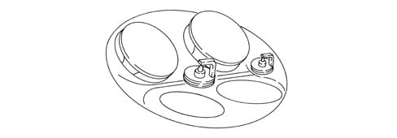
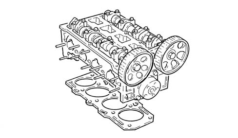
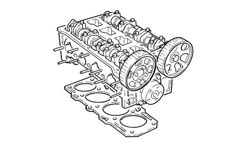
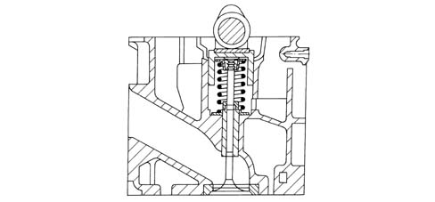

1016E cylinder head/s - various operations
- Path
- Descriptions > 10 ENGINE > 1016 CYLINDER HEAD/S > 1016E cylinder head/s - various operations
- Kind
- system description
- Applies to
- engines: 1.6 TS, 2.0 TS, 1.9 JTD 8V, 1.9 JTD 16V; all production periods
- Interactive page
- https://sloeber94.github.io/elrnDB-a147/en/#/3022406
Applies to: engines: 1.6 TS; all production periods; only with equipment: 103 CV
OPERATION
The cylinder head is the monolithic type made from aluminium and silicon alloy.
The four valves per cylinder are operated by two camshafts via hydraulic tappets.
The space layout enables the combustion chambers to accommodate:
- the four valve heads
- the opening in the centre spark plug
- the opening in the side spark plug
with the advantage of improving the engine's thermal efficiency and reducing harmful exhaust emissions.

The valve guides are installed by interference fit in their seats in the cylinder head.
The inner diameter is finished off after assembly, using a specific reamer.
The cylinder head gasket is of the multilayer metal type, and there is no need to retighten the cylinder head at all during the life of the engine.

Applies to: engines: 1.6 TS; all production periods; only with equipment: 120 CV
OPERATION
The cylinder head is the monolithic type made from aluminium and silicon alloy.
The four valves per cylinder are operated by two camshafts via hydraulic tappets.
The space layout enables the combustion chambers to accommodate:
- the four valve heads
- the opening in the centre spark plug
- the opening in the side spark plug
with the advantage of improving the engine's thermal efficiency and reducing harmful exhaust emissions.
The valve guides are installed by interference fit in their seats in the cylinder head.
The inner diameter is finished off after assembly, using a specific reamer.
The cylinder head gasket is of the multilayer metal type, and there is no need to retighten the cylinder head at all during the life of the engine.

Applies to: engines: 2.0 TS; all production periods
OPERATION
The cylinder head is he monolithic type made from aluminium and silicon alloy.
The four valves per cylinder are operated by two camshafts via hydraulic tappets.
The space layout enables the combustion chambers to accommodate:
- the four valve heads
- the opening for the centre spark plug
- the opening for the side spark plug
with the advantage of improving the engine's thermal efficiency and reducing harmful exhaust emissions.
The valve guides are installed by interference fit in their seats in the cylinder head.
The inner diameter is finished off after assembly, using a specific reamer.
The cylinder head gasket is of the multilayer metal type, and there is no need to retighten the cylinder head at all during the life of the engine.
Applies to: engines: 1.9 JTD 8V; all production periods
CONSTRUCTION FEATURES
The cylinder head is of the monolithic type, of aluminium-silicon alloy.
The two valves per cylinder, parallel and vertical, are fitted in the valve guides and are operated by a single overhead camshaft with cams acting on mechanical type tappets.
The valve guides are installed by interference fit in their seats in the cylinder head. The bore is finished off after assembly, using a specific reamer.
Compared with heads with precombustion chambers, the entire combustion process takes place in the combustion chamber in the piston.
The cylinder head gasket is of the multilayer metal type, and there is no need to retighten the cylinder head at all during the life of the engine.

Applies to: engines: 1.9 JTD 16V; all production periods
CONSTRUCTION FEATURES
The cylinder head is of the monolithic type, of aluminium-silicon alloy.
Two cast iron camshafts, in a camshaft housing; driven by a belt and gears.
The four valves per cylinder, parallel and vertical, are positioned in the valve guides and operated by rockers controlled by camshaft cams kept in contact with the valves by means of hydraulic tappets.
The valve guides are installed by interference fit in their seats in the cylinder head. The bore is finished off after assembly, using a specific reamer.
Compared with heads with precombustion chambers, the entire combustion process takes place in the combustion chamber in the piston.
The cylinder head gasket is of the multilayer metal type, and there is no need to retighten the cylinder head at all during the life of the engine.